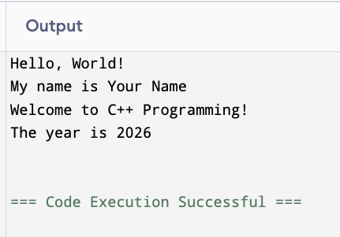

Introduction to C++
| Layer | What it covers | Course |
|---|---|---|
| SW Engineering | Design choices, architecture | p400 |
| Abstractions | Why we avoid direct hardware access | p400 |
| Mechanisms | C++/C: direct hardware access | p360 |
| ASM | Machine-level programming | — |
| Category | Who controls it | Example |
|---|---|---|
| Identifiers | You | age, name, main |
| Reserved words | The compiler | int, return, if |
| Literals | Fixed in the source | 25, "Hello", 0 |
error: expected unqualified-id before 'int'
int int = 5;
^~~error: invalid preprocessing directive #Includeerror: 'messge' was not declared in this scope25, it is always 25.main() prepare the programming environment — without them, the rest of the program cannot compile or run.#include).#include directive#include tells the preprocessor to insert the contents of a header file into your source before compilation begins.cout or cin are.#include <iostream>iostream provides the tools for input and output.cout, cin, and endl are not available.| Name | Purpose |
|---|---|
cout |
Output to the terminal |
cin |
Input from the keyboard |
endl |
End the current line |
< > — search the standard library locations." " — search the current project directory first, then standard locations..h files.h extension: <math.h>, <stdio.h>..h: <cmath>, <cstdio>..h files.using namespace stdstd:: prefix: std::cout, std::cin, std::endl.cout, cin, and endl directly.#include <iostream> imports the input/output tools (cout, cin, endl).using namespace std lets you write standard library names without the std:: prefix.main() function.main() and the OS always receives a result when main() returns.main() declarationmain returns intmain is sent to the operating system when the program finishes.0 means the program ran successfully.{ and } belongs to the block.main()return 0main() is the entry point — execution always starts here.return 0 closes main() and tells the operating system the program finished successfully.// 1-1.cpp
// Your Name
// Today's Date
// My first C++ program.
#include <iostream>
using namespace std;
int main()
{
string name = "Your Name"; // replace with your first and last name
int year = 2026; // replace with the current year
cout << "Hello, World!" << endl;
cout << "My name is " << name << endl;
cout << "Welcome to C++ Programming!" << endl;
cout << "The year is " << year << endl;
return 0;
}
Output from 1-1.cpp
#include <iostream>, using namespace stdmain() is the entry point; statements run top to bottom; return 0 closes the programcoutBankAccount class where the account knows its own balance and rules — covered in the second half of the course.greeting.cpp that you are writing today.main() function when some other languages do not?main() to anything you wanted, what would the tradeoffs be?age is better than x; totalPrice is better than tp.Int, INT, and int are three different things; only int is a reserved word.int age adds no value.int score = 0; — one helpful, one unhelpful. Explain the difference.return? Try it and record the error message.#include <vector> to a program that uses no vectors is unnecessary.#include <iostream> — produces errors like 'cout' was not declared in this scope that seem unrelated to the problem.#Include instead of #include — preprocessor directives are case-sensitive; this produces invalid preprocessing directive.using namespace std — produces errors like 'cout' is not a member of 'std' or requires std:: in front of every standard name.// A program using multiple headers
// calculator.cpp
// Student Name
// Today's Date
// Basic arithmetic calculator.
#include <iostream>
#include <cmath> // provides sqrt(), pow(), abs()
using namespace std;
int main()
{
double x = 16.0;
cout << "sqrt(" << x << ") = " << sqrt(x) << endl;
return 0;
}hello.cpp written by you today that prints a greeting.using namespace std from a program that uses cout? Try it and record the error.#include <iostream> and #include "iostream"? When would you use each?using namespace std is so convenient, why might an experienced programmer choose not to use it?cout? How does a namespace solve that problem?main() with return 0 — always, without exception, until you have a reason not to.main() focused on the high-level logic of the program; detailed work belongs in separate functions.{ with a closing brace } — mismatched braces are a common source of confusing errors.expected ';' before errors that point to the next line, not the actual problem.main — mian(), Main(), or MAIN() are all undefined; the linker error message is undefined reference to 'main'.main() — executable statements must be inside a function.main()? Why is it not void?main() function that prints your name, your major, and the current year — one per line.return 0 from main()? Is it an error, a warning, or silently accepted?main() and not at the top of the file?main() always returns an int. What does it mean for a function to “return” a value?" on a string literal — the compiler error is confusing because it points to the wrong line.Cout or COUT instead of cout — C++ is case-sensitive; cout is always lowercase.cout statement — the error message points to the next line.double to store your GPA and print it.#include <iostream> from 1-1.cpp? Record the exact error message.CISP 360 · Fowler
Comments